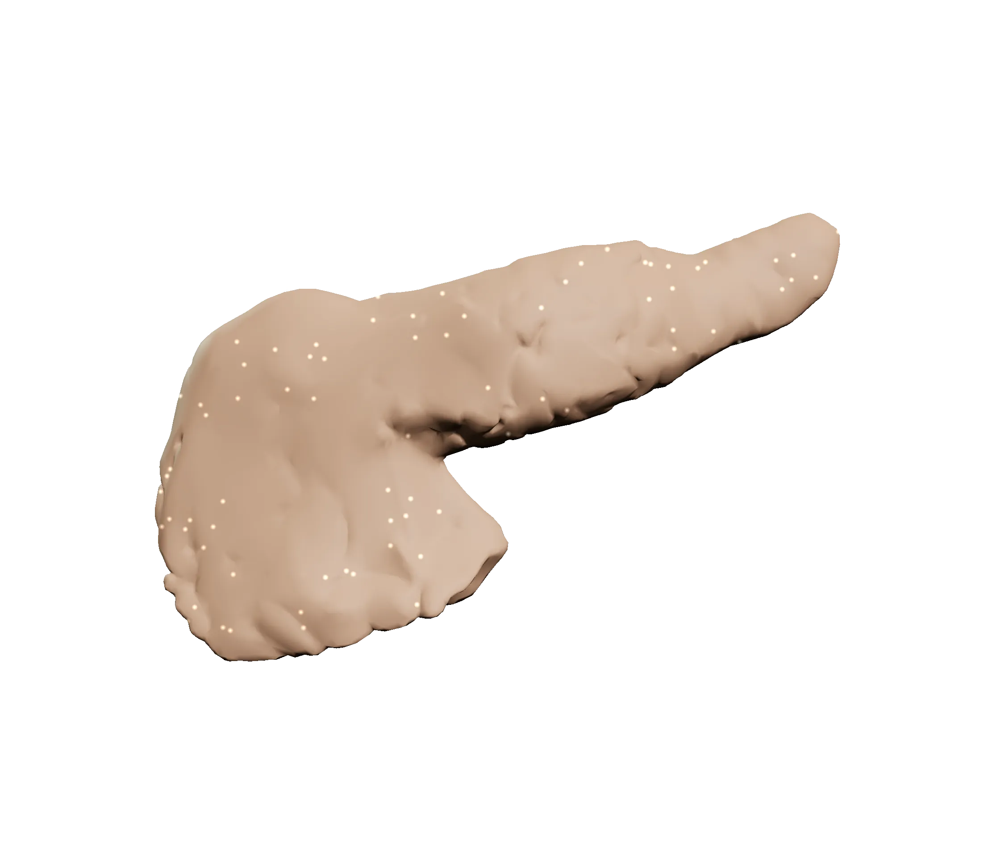
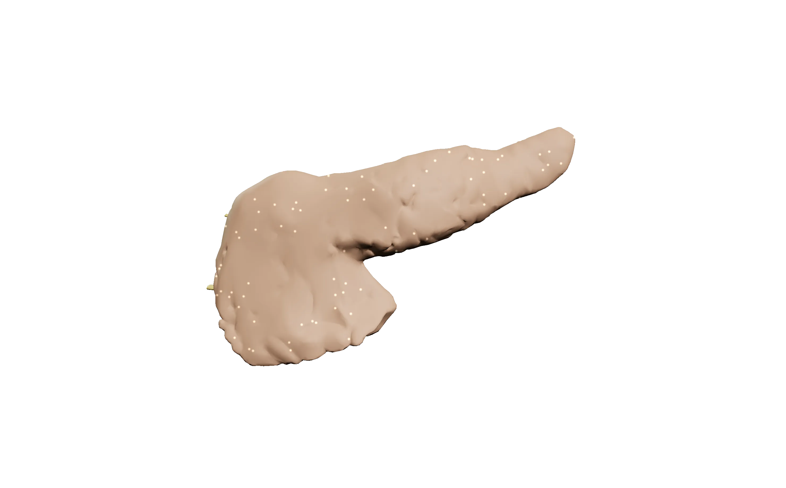

Chapter 1
Feedback alone reacts too late.
The sensor reports glucose 10 minutes late and only every 5 minutes, and insulin acts through two lags. By the time the controller responds, the meal has already pushed glucose out of the band.
01 — Overview · CHEE 4071
Blood glucose, treated as a chemical process. A sensor that reports late, a pump that can only push one way, and a meal that arrives without warning. Design the controller, and watch the loop close.
Seborg, Edgar, Mellichamp & Doyle, Example 23.3 / Exercise 23.6 · an illustrative textbook patient

The engineering problem
Six blocks, one loop. Select a block to see its role.
Chapter 1
The sensor reports glucose 10 minutes late and only every 5 minutes, and insulin acts through two lags. By the time the controller responds, the meal has already pushed glucose out of the band.
Chapter 2
At the basal rate, the pump has a lot of room to add insulin and very little to take it away: it can't go below zero. Undershoot is the risk the controller can barely correct.
Chapter 3
A static bolus sized from the meal, given 15 minutes early, cancels most of the disturbance before the sensor sees it. Same meal, same controller, a different outcome.
Chapter 4
Every minute of sensor delay costs phase. The continuous-time margin says how much delay the loop could tolerate; the sampled loop, simulated by the Python reference, tolerates less.
Explore the organ
Drag to turn the pancreas. Use the tools to look inside, isolate the duct, or show the duodenum it sits against.
Abdomen Pancreas

Live 3D is off: this browser is drawing graphics without the graphics card (hardware acceleration is off or unavailable), which makes 3D very slow. You can still try it at low resolution.
Anatomy: BodyParts3D, © The Database Center for Life Science, CC BY-SA 2.1 Japan (Mitsuhashi et al., 2009). Islets are schematic, not anatomical data.
Course concepts
How it was built
One AI model (Claude) wrote the plan; a different model (Gemini) critiqued it; the student accepted or rejected each critique point; the final plan was then built independently by two models into two websites. Both builds are graded by the same tests against values produced by an independent Python reference implementation, so the comparison is about numbers, not impressions. This page is the Claude build.
Scope. Math stays at a 3rd/4th-year undergraduate process-control level. No drug names, carbohydrate ratios, correction factors or dosing guidance appear anywhere. Every number comes from Seborg Ex. 23.3, a cited source, or the Python reference (labelled).
02 — Simulator
Change the controller, the meal or the sensor and watch the closed loop respond.
P1 · Glucose: true and measured
Shaded: Seborg band 54–144 mg/dL; dashed: 70–180 mg/dL. Measured = what the controller sees (sampled, delayed, noisy).
P2 · Insulin infusion U: basal / feedback / bolus
Stacked: U = Ubasal + (feedback − basal) + bolus, clipped to [0, 115] mU/min.
P3 · Meal disturbance D(t)
D = Σ A·m·e−k(t−tmeal), A = 9 mg/dL/min, k = 0.05 1/min.
Compare runs
Up to 4 saved runs (kept in this page only) plus the current run. Save one with Save run at the top; remove one with its ×.
Analysis
P10 · Peak and nadir vs τc (live sweep)
Each point is a full simulation with the current settings and IMC tuning at that τc. Diamond = current τc.
P11 · Peak and nadir vs pre-bolus time (live sweep)
Each point is a simulation with the static bolus started tpre min before each meal. Diamond = current tpre.
03 — Theory
The model, its linearization and reduction, and feedforward. Every card shows the equation, its units, and what it means physically; numbers are computed live from the Seborg Ex. 23.3 parameters.
04 — Control Design
IMC tuning, the block diagram and the stability margins. These settings are shared with the Simulator tab: change τc here and the simulator follows.
05 — AI Workflow
One model planned, a different model critiqued, Andrew decided what to accept, two models built the website independently from the same prompt, and the same tests graded both. Everything below comes from the project's records, linked at each step.
Accept / reject
Comparison
Selected rows from the full comparison (setup held equal, fairness caveats, every source): docs/comparison.md. Claude wrote the comparison and built one of the two sites, so every row cites its source.
Frozen artefact
Kept exactly as Gemini produced it, for comparison. It has known problems listed above.
Prompts
All 35 prompts and every decision, session by session: docs/process-log.md.
In Andrew's words
After comparison, I chose to ship mostly Anthropic made content. I found that Claude had better design and overall building skills. Something that surprised me while making the website was how good ChatGPT is at making moodboards and planning for UI and UX implementations. I found it much better than Claude and Gemini. If I were to rebuild a website, I would use GitHub Pages with a Gemini API key implementation, similar to what I did in Process Dynamics and Controls. This does cost you (I spent around $5 for both Separations and PD&C), but it is definitely worth it for hands free integration!
Something I learned about process control over these past few weeks has been how recycle affects processes. I liked working with AI and expanding my knowledge on building websites. In the future, I would like to further my understanding of LLMs and use GitHub Pages and Claude to build a homepage for all of my projects and endeavors.
06 — Video & Transcript
The recorded presentation, the slides it uses, and its verbatim YouTube auto-generated transcript.
07 — References
Sources are grouped by role: the textbook and theory, the model's parameters, the tools and data, and who contributed what.
01
02
Cited by the parameters in js/data.js (the full parameter table, with a source per row, is on the Theory tab):
03
tools/build_pancreas_mesh.mjs; the
adapted mesh and its two still renders in site/models/ are shared under the same licence.ap-sim/, NumPy/SciPy) that generates the expected test values; Playwright for browser tests;
GitHub Actions (CI, the Gemini build runner) and GitHub Pages (hosting).04
05
Individual project.